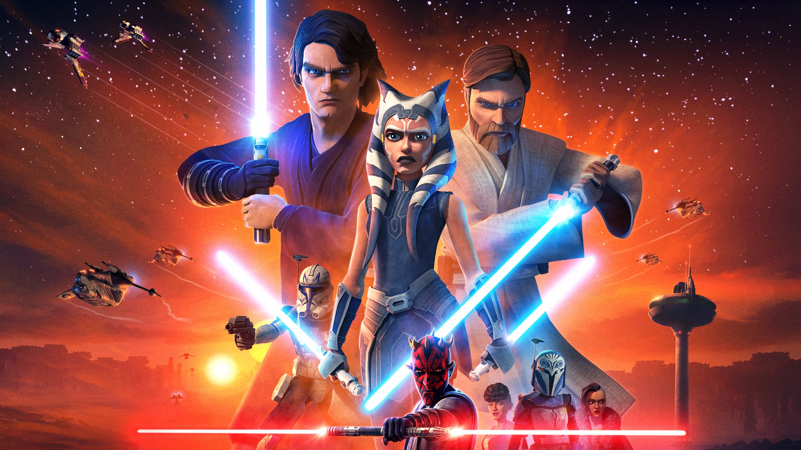
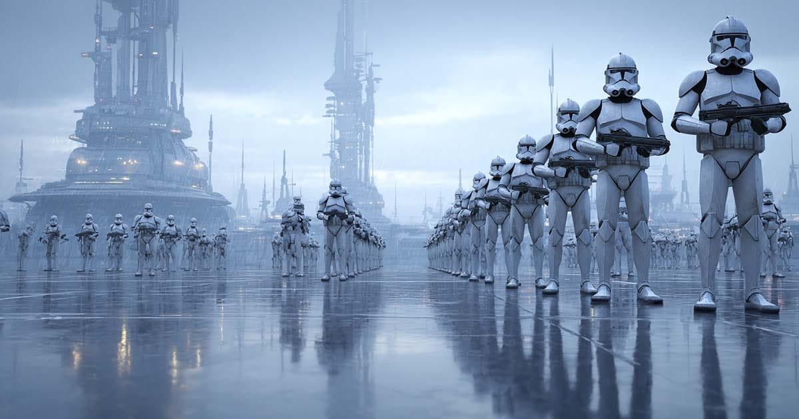
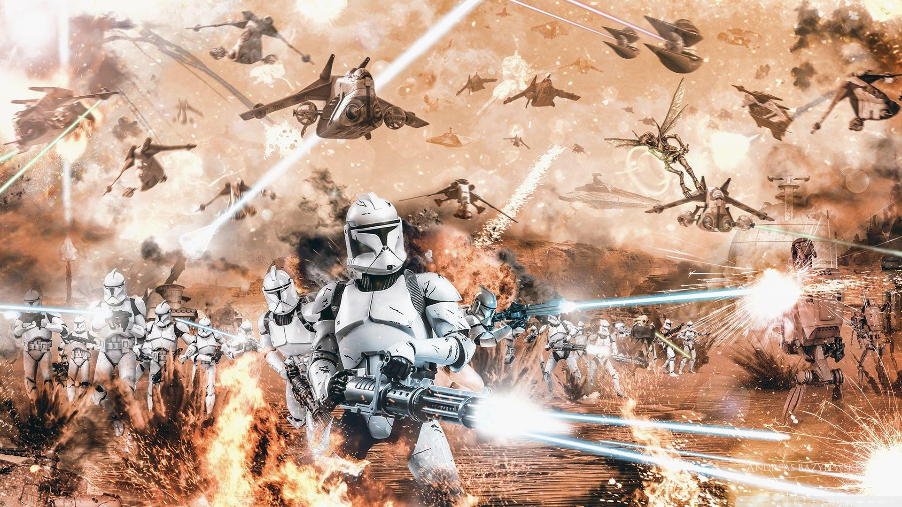

Un conflicto que cambió el destino de la galaxia.
La Guerra de los Clones fue un conflicto galáctico
entre la República Galáctica y la Confederación de
Sistemas Independientes.
La República utilizaba
un ejército de soldados clon, mientras que los
Separatistas combatían principalmente con droides.
Durante este periodo, los caballeros Jedi
participaron como generales del ejército de
la República.
Sin embargo, el conflicto formaba
parte de un plan secreto del canciller Palpatine
para conseguir el control de la galaxia.



La siguiente tabla presenta algunos personajes importantes y su participación en la guerra.
| Personaje | Bando | Función |
|---|---|---|
| Anakin Skywalker | República Galáctica | General Jedi |
| Obi-Wan Kenobi | República Galáctica | Maestro Jedi y general |
| Ahsoka Tano | República Galáctica | Comandante y aprendiz Jedi |
| Conde Dooku | Separatistas | Líder político y Sith |
| General Grievous | Separatistas | Comandante militar |
La guerra terminó cuando Palpatine ejecutó
la Orden 66, provocando que los soldados clon
se volvieran contra los Jedi.
Posteriormente,
la República Galáctica fue transformada
en el Imperio Galáctico.
Puedes consultar las siguientes páginas para obtener más información sobre la saga.
Autor: Cristobal Santos
Actividad 2.2 HTML